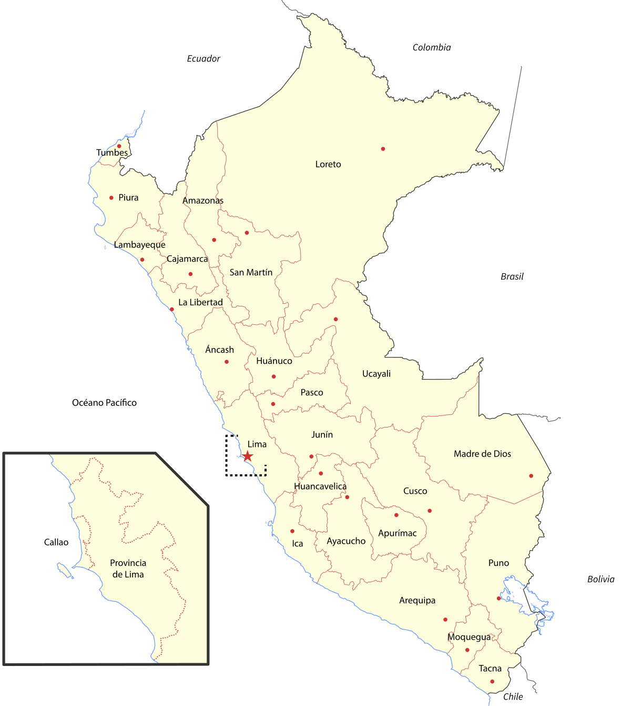

CAJAMARCA
Los departamentos son las circunscripciones políticas, administrativas y jurídicas de mayor nivel en que se divide el Perú. Están dotados de gobiernos regionales autónomos elegidos democráticamente. Desde 2003, el Perú cuenta con 26 circunscripciones de nivel regional: 24 departamentos y dos provincias con regímenes especiales, a saber: la provincia constitucional del Callao, que cuenta con un gobierno regional propio sin pertenecer a ningún departamento; y la provincia de Lima,que no depende del gobierno regional de su departamento homónimo, sino que su municipalidad cuenta con facultades y competencias de gobierno regional, a la vez que se halla excluida del proceso de regionalización. Actualmente, no se ha establecido ninguna región de manera oficial.Luego de la creación de los gobiernos regionales, es frecuente nombrar equivocadamentecomo región a cualquiera de los 24 departamentos y a la Provincia Constitucional del Callao
